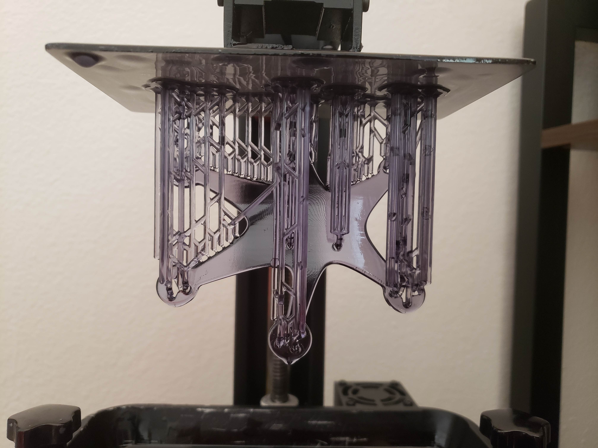

3D Printed Hexcopter
· 661 words · 4 minutes reading time Fusion360 3D Printing
Motivation
I wanted to get into FPV drones, but buying one off the shelf felt boring, so I decided to design and 3D print my own instead. To my surprise, printing a performance multirotor frame turns out to be extremely difficult — it isn't just a matter of geometry. A frame has to survive steady thrust loads, the impulse loading of hard maneuvers and crashes, torsional flex, and aerodynamic drag, all while staying as light as possible. Every one of those constraints pulls the design in a different direction.
What made the project feasible was the resin printer I had just bought. Resin (SLA) printing resolves fine features and complex curved geometries that a filament (FDM) printer can't reliably produce, and it does so without the weak layer-adhesion planes that make FDM parts split under load. Those capabilities let me design a frame that balances thrust forces against frame torsion and flexion, which is the key to stable flight: if the arms flex unpredictably under load, the flight controller is constantly fighting a moving target.
Methodology
As far as I'm aware, I'm the only person to have designed and 3D printed a micro hexacopter specifically, so with no prior art to copy my goal was simply a working proof of concept.
I didn't start with a fixed picture of the final shape. Instead I worked backwards from function: I listed the features the frame had to provide, and let those requirements drive its parameters. The overall frame size, for instance, was set by the off-the-shelf parts I had to package — the flight controller stack and the battery. The arm design, on the other hand, was driven by thrust: the motor-and-propeller combination determined how much force each arm had to carry, which in turn set the stiffness the arms needed, and therefore their aspect ratio (length versus cross-sectional thickness).
Concretely, the build was organized around three component choices:
- Flight controller / ESC stack — a Flywoo GOKU HEX GN405 Nano 13A stack, whose mounting footprint fixed the size of the frame's center body.
- Battery — a single-cell (1S) pack, chosen to keep the craft as small and light as possible.
- Motors and propellers — these set the thrust per arm, and so dictated the profile and stiffness of each arm tip.

My prototyping process usually begins by locking down dimensions, so the first print existed only to verify fitment and proportions of those parts rather than final aesthetics. It was not pretty, and it surfaced plenty of design flaws I hadn't realized I'd baked in — which is exactly what a first prototype is for.
I course-corrected through roughly ten CAD iterations before landing on a design worth committing to. Each revision traded a little against the others: thinning the arms to save mass, then thickening them again where flex showed up; reshaping the body to fit the stack more tightly; refining the curves to take advantage of what the resin printer could actually hold. The result was far more realistic — the geometry showed off the resolution of the resin process, the mass was minimized, and the proportions finally looked right.
After a few more finishing touches, I had a complete airframe with the electronics installed:

Results
The mechanical and design side of the project is essentially complete: the frame prints cleanly, packages all of the electronics, and holds together as intended. Like several other projects in this library, the remaining work has taken a back seat to finishing my academic career, and what's left is entirely on the firmware side. To get it flying I still need to set up BetaFlight, flash and configure the flight controller, and bind the receiver to my transmitter so the craft can be armed and tuned. Those are well-trodden steps for a standard build — the hard, novel part, designing a printable micro hexcopter frame that flies, is done.